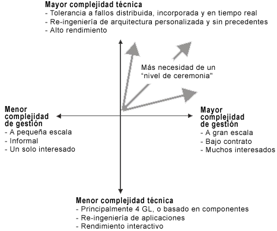

| Directriz: Discriminadores del proceso |
 |
|
| Elementos relacionados |
|---|
Visión generalSobre el proceso de desarrollo de software influyen los factores siguientes:
Estos factores no tienen todos la misma importancia. En las secciones siguientes se describen algunos de los factores principales, los que tendrán un efecto más probable sobre la forma global del proceso de desarrollo, y la manera en que se implementarán el proceso y las herramientas en la empresa de desarrollo. El contexto empresarial describe el contexto en el que se desarrolla el software. Existen distintos tipos de contextos empresariales que afectan a la forma en que se puede personalizar mejor el proceso. A continuación, se proporcionan ejemplos de contextos empresariales:
Hay muchas situaciones intermedias; por ejemplo, aquéllas en las que sólo se subcontrata parte del desarrollo del software, aquéllas en las que la dispersión geográfica es un factor adicional, etc. El número total de interesados distintos es un buen indicador del contexto empresarial. El contexto empresarial afecta al nivel de ceremonia, al nivel de formalidad y la rigidez del proceso. Cuantos más interesados (compradores, subcontratistas, cuerpos reguladores, etc.) estén implicados, más fácil será que el proyecto produzca evidencias formales, como documentos, informes y prototipos, para los principales objetivos del proyecto. El tamaño del esfuerzo de desarrollo de softwareEl tamaño del esfuerzo de desarrollo de software según han definido algunas métricas, como las líneas de código fuente (SLOC), las instrucciones de código fuente entregado o los puntos de funciones, el número de personas y meses o sencillamente el coste. El tamaño del esfuerzo afectará al nivel de la ceremonia, al nivel de formalidad a la rigidez del proceso. Cuanto más grande sea el proyecto, más grande será el equipo de desarrollo y, con independencia del contexto empresarial, más formalidad y visibilidad deberán tener los distintos equipos y responsables respecto a los requisitos, las interfaces y los indicadores de progreso. Las cuestiones de comunicación de los proyectos de gran tamaño se agravan aún más en los equipos dispersados geográficamente. El grado de novedad se basa en los precedentes de este esfuerzo de software relativos a la empresa de desarrollo y, en particular, en si el desarrollo se encuentra en un segundo ciclo o en un ciclo subsiguiente. Esto incluye la madurez de la empresa y de su proceso, sus activos, su conjunto de habilidades actual y cuestiones como el ensamblaje y la formación de un equipo, la adquisición de herramientas y otros recursos. El grado de novedad de un proyecto afecta al proceso de una forma totalmente distinta. Un nuevo proyecto, el primero de este tipo, afecta de forma significativa a la configuración dinámica: las fases inicial y de elaboración serán más largas, y pueden extenderse durante varias iteraciones. Asimismo se dedicará más énfasis a obtener y capturar requisitos, a modelar los guiones de uso, a la arquitectura y a mitigar el riesgo. Para un proyecto que es un ciclo en la evolución a partir de un sistema anterior, la gestión de cambios es más importante y la incorporación del código heredado implica algunos retos tecnológicos. La novedad no es sólo relativa al sistema que se está desarrollando, sino que también se refiere a la madurez de las empresas que se encargan puesto que la introducción de nuevas técnicas o herramientas afecta al proceso. En particular, la introducción del propio Rational Unified Process (RUP) en una empresa debe realizarse escalonadamente en pasos cuidadosos. Una empresa seguirá presentando cierta inercia antes la adopción de un nuevo proceso y la estrategia de adopción debe intentar una transición suave entre las prácticas existentes y las nuevas. Tipo de aplicaciónExisten distintos tipos de aplicaciones, por ejemplo, los sistemas de tiempo real incorporado, los sistemas de información distribuida, los sistemas de telecomunicaciones, las herramientas CASE (ingeniería de software asistida por ordenador), etc. El tipo de aplicación afectará al proceso, especialmente con respecto a las restricciones específicas que puede imponer el dominio sobre el desarrollo, como la seguridad, el rendimiento, la internacionalización, las restricciones de memoria, etc. El tipo de aplicación puede afectar al proceso si la aplicación es clave para la misión; por ejemplo, el sistema de control de vuelo de un avión. Un sistema clave para la misión precisa un nivel más alto de ceremonia en general, tanto para el rastreo de los requisitos como para garantizar la calidad del producto. Una aplicación clave para la misión también precisa que se empleen más recursos en las pruebas. El tipo de desarrollo, o el dominio de destino, suscitan cuestiones de proceso como las siguientes:
Tipo de desarrolloHay varios tipos de desarrollo, entre otros:
El proceso de desarrollo actualEn la mayoría de los casos, no se sustituye el proceso de desarrollo de software que está en vigor actualmente en la empresa porque, en la mayoría de los casos, va a implementar el nuevo proceso de desarrollo paso a paso, centrándose primero en las áreas más críticas y de mayor importancia. Una parte del proceso de desarrollo de software actual puede continuar existiendo durante un cierto tiempo, incluso de forma permanente. Problemas y motivos de raízLos problemas que se identifican y priorizan para el proyecto tienen influencia en aquellas áreas del proceso en las que se concentra al principio del proceso de implementación. Es importante tener en cuenta que, si no hay una forma establecida de trabajar en la empresa, puede tener muy poco sentido buscar los problemas. Consulte el apartado Concepto: Implementación de un proceso en un proyecto. Por el contrario, debe identificar los motivos de raíz de los problemas. Para eliminar los problemas, debe atajar los motivos de raíz mejorando el proceso, introduciendo herramientas para automatizar los procesos y formando personal. Ejemplos de problemas comunesA continuación, se incluyen algunos ejemplos de algunos problemas comunes:
Ejemplos de motivos de raízUn problema suele ser un síntoma de que algo no es correcto. Deben identificarse los motivos de raíz de los problemas. A continuación, se incluyen algunos ejemplos de algunos motivos de raíz comunes:
Factores de la empresaLa implementación del proceso en una empresa, depende de factores propios de la empresa como su capacidad para el cambio, su estructura organizativa, su cultura en los ámbitos de gestión y organización del proyecto, sus competencias y habilidades disponibles, su experiencia previa y sus actitudes actuales. Los factores de la empresa también afectan a la forma en que se configura el proceso. Por ejemplo, si el personal de la empresa ha utilizado anteriormente una descripción de procesos de desarrollo de software, entonces será más fácil empezar a utilizar RUP. Por otra parte, si el personal no ha utilizado nunca una descripción de procesos de desarrollo de software, puede decidir la limitación del ámbito de la descripción del proceso. También puede asignar un esfuerzo suplementario en hacer la descripción sea más fácil de comprender y de utilizar, asegurándose de que incluya (o haga referencia) a la información que proporcionará un valor mayor. Si algunas áreas son nuevas para la mayoría del personal, el desarrollo de las mejores directrices posibles facilitará la transición. Por ejemplo, si el lenguaje de programación es nuevo para la mayoría del personal, debe tener unas directrices de programación y de diseño que sean muy buenas para ayudar a su aprendizaje. ActitudesLas actitudes negativas entre el personal de una empresa ante el cambio a una tecnología nueva, un proceso nuevo o unas herramientas nuevas es posiblemente la mayor amenaza respecto a una implementación satisfactoria del proceso y de las herramientas. Un exceso de entusiasmo hacia el proceso también puede ser un problema, porque puede provocar que el personal se centre en exceso en el proceso. Para valorar las actitudes del personal respecto a la nueva tecnología, los nuevos procesos y herramientas, haga preguntas como las siguientes:
Para valorar la motivación del personal, busque respuestas a preguntas como las siguientes:
Entre los signos de una actitud negativa se encuentran afirmaciones como las siguientes:
Algunas formas de abordar las actitudes negativas son las siguientes:
Algunos signos de un entusiasmo excesivo son los siguientes:
Algunas formas de abordar el exceso de entusiasmo son las siguientes:
Los distintos tipos de sistemas y sus proyectos pueden clasificarse en términos de la complejidad técnica del sistema y la complejidad de gestión. En la figura siguiente se ilustra un concepto de cómo pueden clasificarse los distintos sistemas. Por ejemplo, un pequeña aplicación de hojas de cálculo típica suele tener muy poca complejidad técnica y es fácil de gestionar. En el otro extremo encontramos un proyecto típico de Weapon Systems, que suele ser complejo técnicamente y complejo de gestionar. Normalmente al aumentar el tamaño del sistema, la duración del proyecto o el contexto empresarial también aumenta la complejidad de gestión. El aumento de la novedad, en el dominio del problema o en el espacio de la solución, aumenta la complejidad técnica. Existe una interacción entre la complejidad de gestión y la complejidad técnica; muchos proyectos de gran tamaño son también técnicamente complejos. Esto tiene como resultado lo siguiente:

Los sistemas se clasifican en términos de complejidad técnica y complejidad de gestión. |
© Copyright IBM Corp. 1987, 2006. Reservados todos los derechos. |